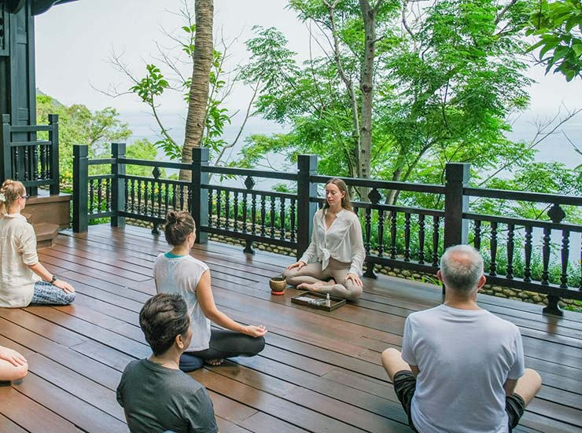

Keep value local
Work with people rooted in the place.
Local guides, independent experiences and destination partners help more of the value of travel remain where the journey happens.

Home / About / Sustainability
Sustainability
For us, responsible travel starts with practical choices: how a journey is routed, who benefits locally, how much is packed into the day and how respectfully people experience a place.
Our approach
We do not treat sustainability as a separate add-on. It sits inside the everyday decisions we make when choosing partners, pacing itineraries and connecting travellers with local places.
That means favouring thoughtful routing over unnecessary movement, meaningful experiences over volume, and partners who add value to the communities they work within.
Local guides, independent experiences and destination partners help more of the value of travel remain where the journey happens.

Good routing can mean less time in vehicles, fewer duplicate transfers and a more enjoyable journey overall.

We favour experiences connected to local culture, food, landscapes and traditions rather than activities that could happen anywhere.
What this looks like in practice
Match the hotel, supplier and experience to the trip rather than defaulting to the biggest or busiest option.
Where it makes sense, slower stays can create a richer experience than constantly moving to the next stop.
Set clear expectations around culture, communities, wildlife and the places guests are invited into.
Review partners and itinerary choices as better options and new local knowledge become available.


A better rhythm
More time in one place. A private local experience instead of a crowded checklist. A route that makes sense. A hotel chosen for fit rather than status alone.
Thoughtful travel often feels better precisely because it asks less of the traveller and more of the planning.
Explore slower journeys →We prefer specific, practical improvements over broad sustainability claims we cannot evidence.
Plan thoughtfully
Tell us the destination, travellers and priorities. We will build the programme with pacing, local value and practical responsibility in mind.
Start a conversation →